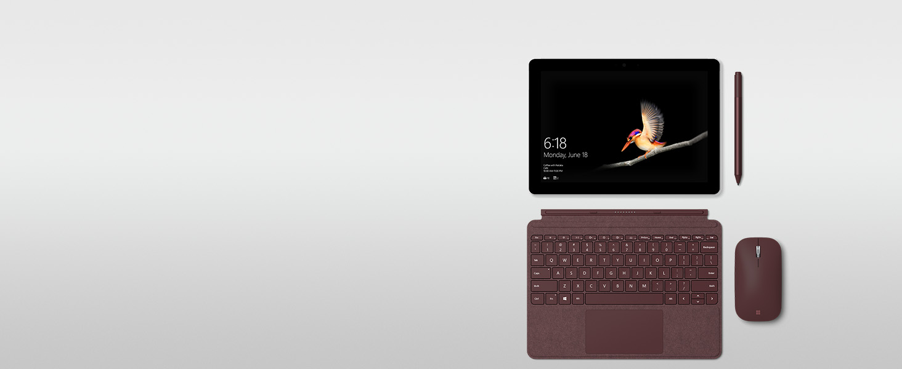
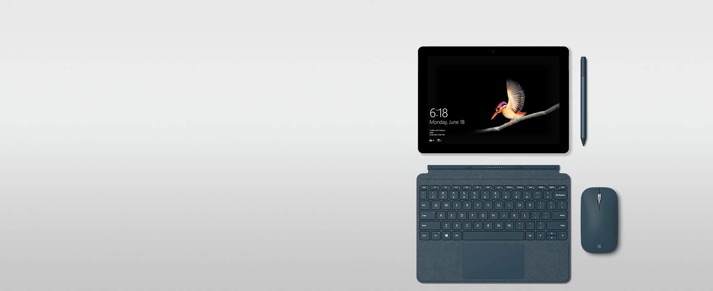

Enjoy comfortable navigation on the go with Surface Mobile Mouse. Its light, low-profile design fits easily in your bag without the bulk of a traditional mouse.
Wireless Bluetooth connection
Surface Mobile Mouse pairs easily with your Surface laptop via wireless Bluetooth connection — no cords or dongle required.
Smooth, comfortable scrolling
New Surface Mobile Mouse features a smooth, sculpted design with a redesigned wheel that fits comfortably in your hand and supports smooth, natural scrolling.
Choose your color
Choose from three rich colors — Platinum, Burgundy, and Cobalt Blue. Mix and match with new Surface Signature Type Cover,* Surface Pro Signature Type Cover,* and Surface Pen.*

Your new go-anywhere mouse
Enjoy comfortable navigation on the go with Surface Mobile Mouse. Its light, low-profile design fits easily in your bag without the bulk of a traditional mouse.

Wireless Bluetooth connection
Surface Mobile Mouse pairs easily with your Surface laptop via wireless Bluetooth connection — no cords or dongle required.
Smooth, comfortable scrolling
New Surface Mobile Mouse features a smooth, sculpted design with a redesigned wheel that fits comfortably in your hand and supports smooth, natural scrolling.